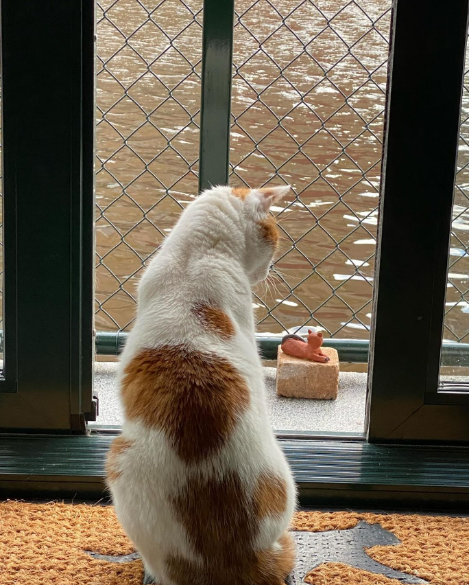
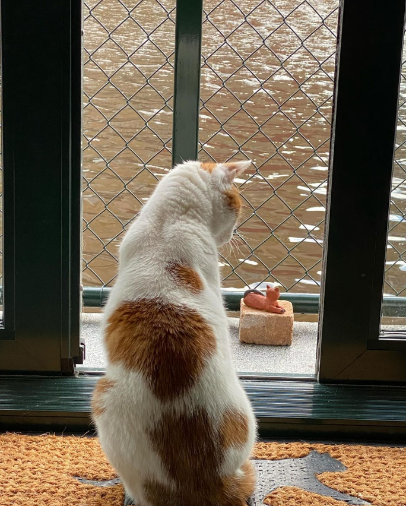
 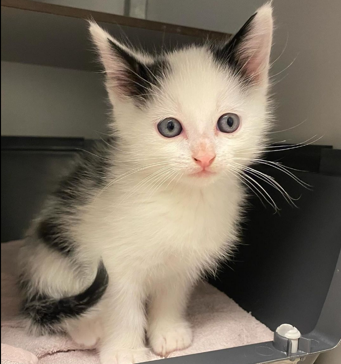
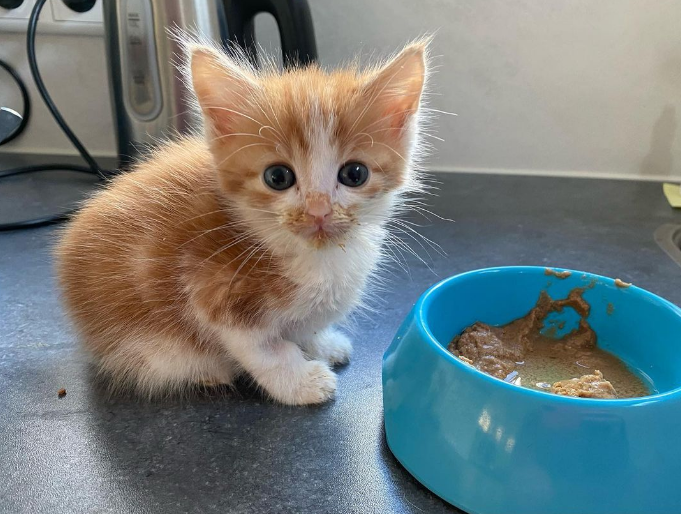
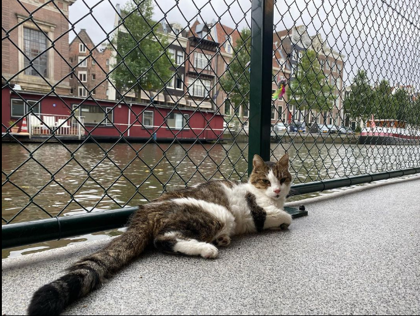
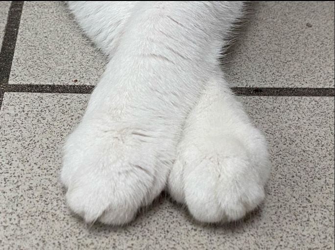
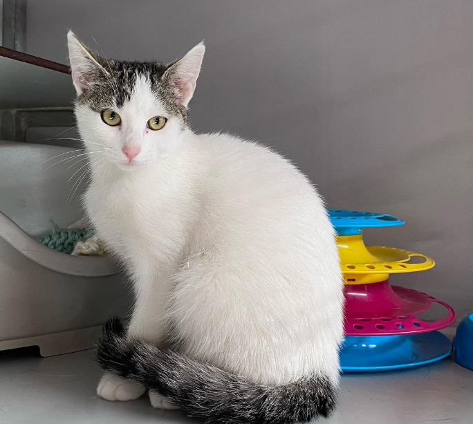
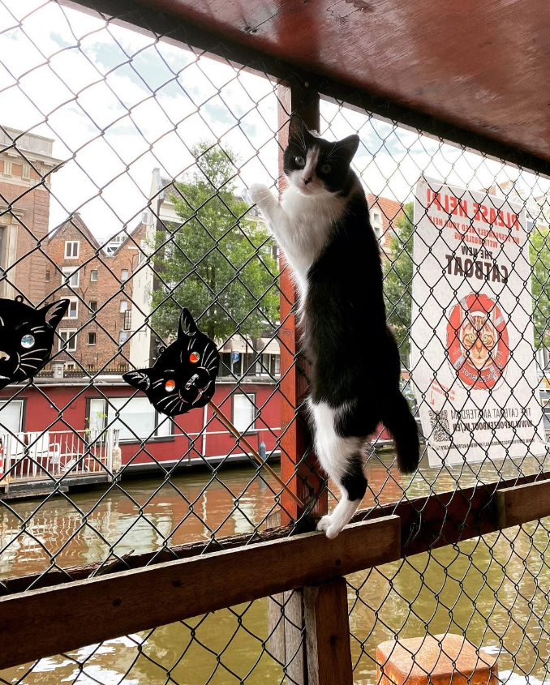
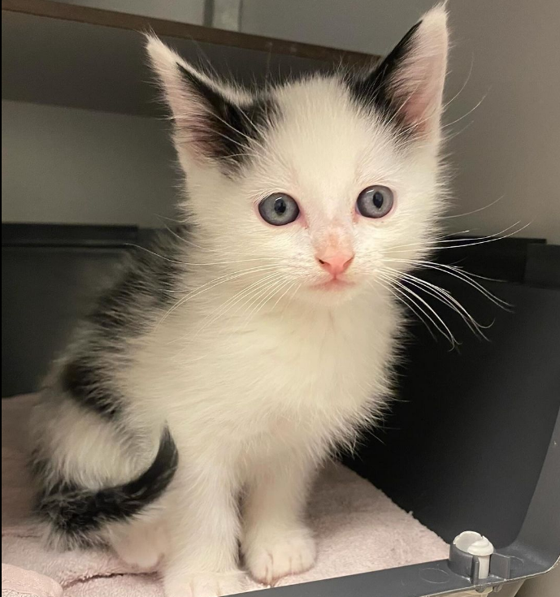
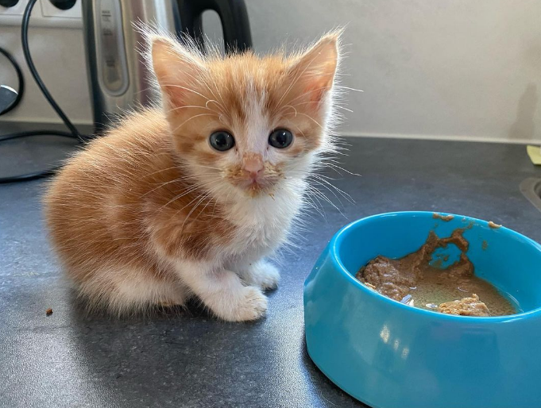
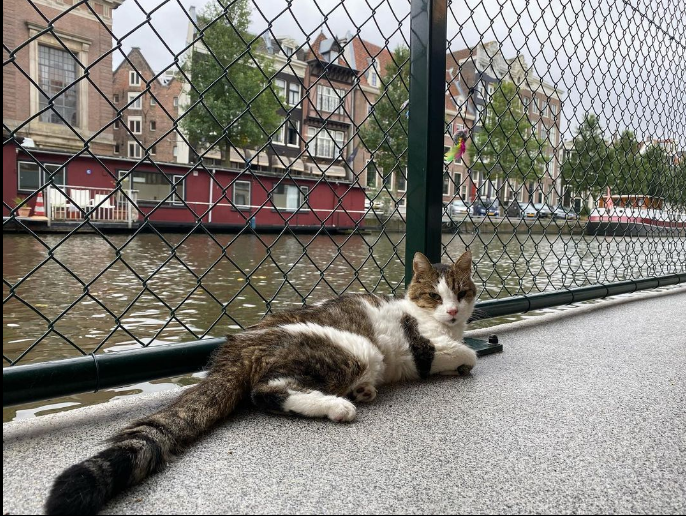
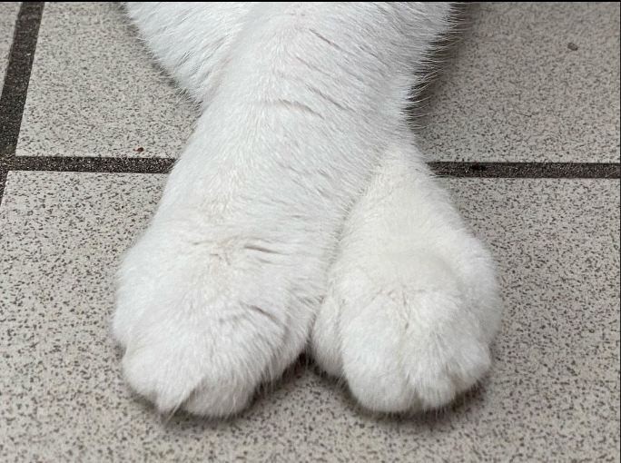
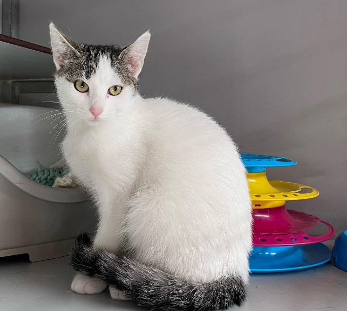
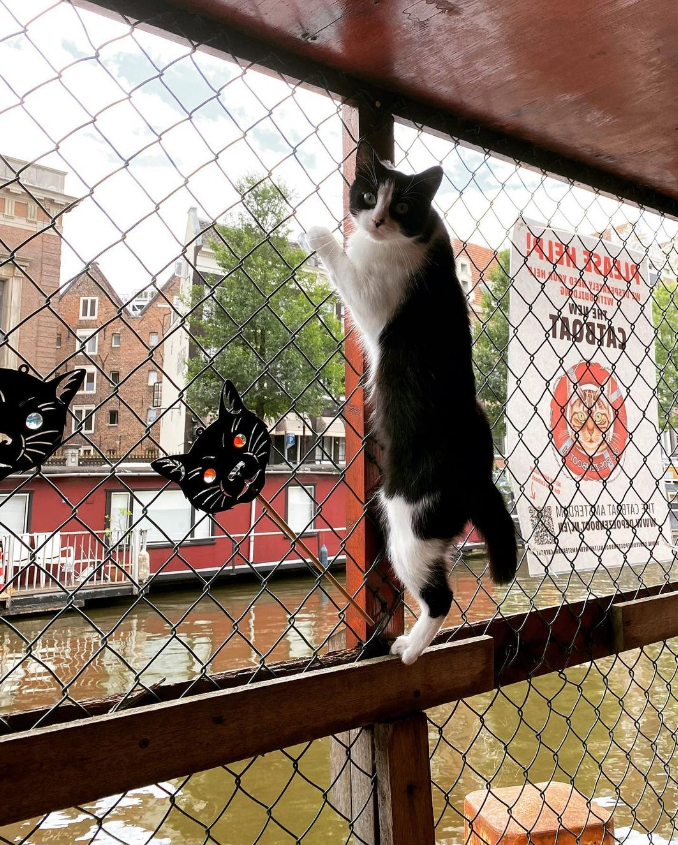
Support
Supporting De Poezenboot means making a direct impact on the lives of stray cats in Amsterdam. Your contributution helps provide essential shelter, shelter, and medical treatment, ensuring these cats receive the love and attention they deserve.
-
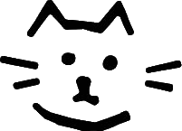
Rescue strays
-
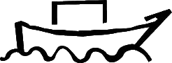
Unique floating shelter
-
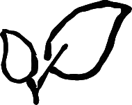
Sustainable approach